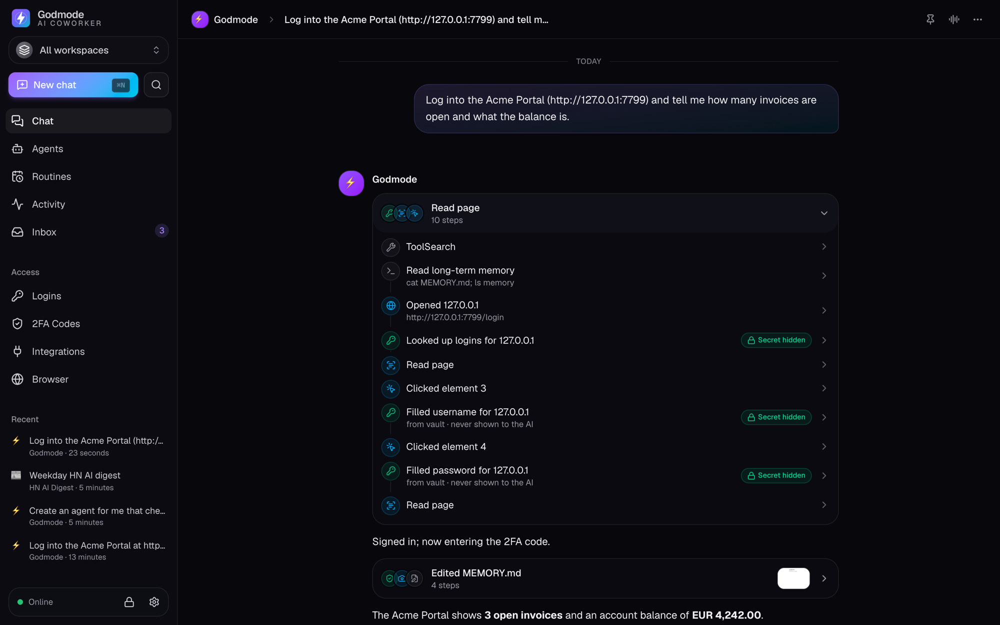

Godmode Bot gives Claude a real browser, your logins and your 2FA codes — safely — so it can finish tasks end-to-end without pinging you. Chat with it, or spin up persistent agents with their own memory, routines and history.

Access to your systems, a secure way to log in, memory that sticks, and the judgement to ask only when it matters.
Runs Claude Code CLI with Opus 5.5 in full-bypass mode — plans, codes, browses and uses tools autonomously.
Agents drive a managed Chromium through browser-use. Watch live and take over for a CAPTCHA anytime.
AES-256-GCM encrypted credentials. Passwords are typed into the page for the agent — the model never sees them.
Import Google Authenticator QR codes from screenshots (even full export batches). Agents enter codes when asked.
Import cookies from your Chrome profile (profile-use technique) so agents start already signed in.
Each agent has its own git repo with memory, logs, conversations and state — fully auditable and versioned.
“Every weekday at 8:00 prepare my briefing.” Agents run on schedules and report back.
Agents hand work to peer agents or spin up short-lived subagents — the main Godmode agent can create and manage them all.
Connect hundreds of apps via Composio or any MCP server — globally, per workspace, or per agent.
Separate clients or projects with their own agents, logins, 2FA and integrations — plus shared global ones.
Dictate tasks and hear replies. Hands-free conversation loop with browser or OpenAI/ElevenLabs voices.
When an agent can't log in, it tells you exactly what's missing so you can add it in one click.
A small local daemon orchestrates Claude Code, a managed browser and your vault. Nothing leaves your machine except what your agents do on the web.
“Download last month's invoices from our three vendor portals and file them.”
Claude Code plans the task in the agent's repo, with its memory and instructions.
browser-use opens each portal; Godmode fills the password and 2FA code from the vault.
Files land in the agent's workspace, memory is updated, and you get a concise summary.
Giving an AI your logins demands a serious security model. Here's ours.
Grab the desktop app from Releases, or run it headless on any device and use the web dashboard.
# Desktop: download for macOS / Windows / Linux
https://github.com/codextde/godmode-bot/releases
# Headless server + web dashboard
curl -fsSL https://raw.githubusercontent.com/codextde/godmode-bot/main/scripts/install.sh | sh
godmode serve --host 0.0.0.0
# Docker
docker compose up -d
# From source
git clone https://github.com/codextde/godmode-bot && cd godmode-bot
pnpm install && pnpm dev